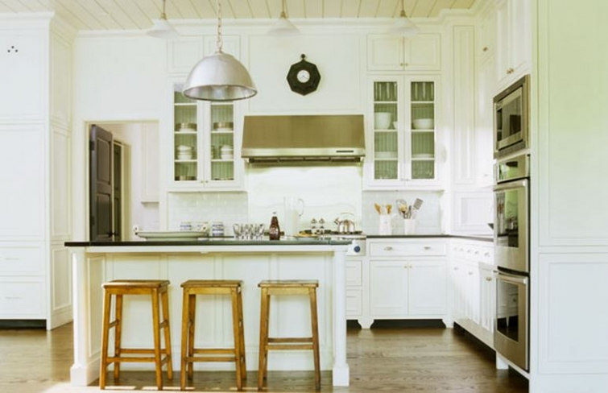

.png)
.PNG)
.PNG)
.PNG)
.PNG)
.PNG)
.JPG)
.JPG)
.PNG)
.PNG)


source
Over the last couple of years, I have included several photos of Barbara Westbrook’s spaces in a number of different posts, but I have never written one devoted entirely to her work. That is, until now. 🙂
I had planned to do one on her brilliant work this month because I seem to be drawn to lake houses in the month of September. Yes, I know that is strange, and it happens every year. Weird, huh? I have saved this photo from House Beautiful for a looooooong time. I love this room she designed in a lake house in South Carolina. Don’t you just love the soft colors, the plank walls, the stone fireplace, and her use of antiques?
And even though this photo is from long ago, this room is still one I could live in today.
Timeless.
This foyer is in the same house.
And so is this office…
and this wonderful porch.
Wouldn’t you like to be sitting out there right now?
Now here is what is so uncanny about this. You won’t believe what I discovered while I was researching this post. This house, with its classic Barbara Westbrook rooms, was designed by….Keith Summerour – the architect I wrote a post about last Friday! Isn’t that a strange coincidence??
And there’s more….
This elegant kitchen…
and this charming bedroom with its gingham linens and headboards…
are both in an Atlanta house (built in 1936) that belongs to…that same architect, Keith Summerour. Guess who did the interior design…Barbara Westbrook. 🙂 Cue the theme song from The Twilight Zone.
Okay…enough with the strange coincidences. Let’s look at some more beautiful rooms by Westbrook Interiors. Here are a kitchen and two bedrooms from another lake house.
I am not sure where the house is in the next photo, but I think you will like this kitchen she designed for it.
So are you as smitten with her work as I am? Even her studio is a gorgeous space (cat included 🙂 )

both inside and out.
Her studio is located in Atlanta, so if you are in need of a designer who can help you with elegant and classic spaces that are comfortable at the same time, Barbara Westbrook can handle your project. Or if you are more of a do-it-yourself decorator, then I hope these photos have given you some inspiration.
Until next time…


.PNG)
Personality plus layers of interest! She’s one of my favorite inspirations. Thanks for sharing.
Kelly, I love her laid back traditional style. Very livable but intentional. So great to see her work in one place and study her style. Thank you for pulling this together to share
—————————————————————–
Laid back and traditional…I had not thought of it like that, but that does describe a lot of her spaces, Trisha. So happy you enjoyed seeing her work!
Kelly
I enjoy my Saturday morning cup of coffe with you! I have pinned myself happy with these scrumptiously designed rooms by Barbara Westbrook. I had just pinned the living room from from the House Beautiful pagesthis past week without knowing the designer’s name. Thank you for all the research you do. I would love to have any one of these rooms.
———————————————————————
Barbara Westbrook’s rooms are certainly pinworthy! I could move in any of them too, Peggy. Enjoy your Saturday!
Kelly
Well you are “preaching to the choir” here. She is one of my all time favorite designers. LOVE everything she does. It was so fun to revisit many of her older designs. She is wonderful!
——————————————————————-
Perhaps we should start a fan club (and urge her to write a book!)
Kelly
Kelly – thanks for these photos. They are beautiful to look at and get some really great ideas.
—————————————————————-
Thank you for reading and leaving a comment Julia! I am happy you liked Barbara Westbrook’s work.
Kelly
Loved that post! That designer is just my style! If you can – I’d like to see more of her rooms. You are such a terrific researcher! Thanks for scoping out all the best designers for us.
———————————————————————
I am so glad you enjoyed seeing her work Charlene. She has such a talent for creating timeless rooms that so many of us love. I will be sure to include more of her rooms in future posts.
Kelly
Kelly,
You already know which room is my favorite…the green office has me written all over it! I just love the use of in homes! My second favorite space is that cozy screened in porch. I could sit there and read all day. Thanks for sharing these photos with us. I do like being at the lake house in September. The temperatures are cooler and their are different animals to watch. Then their are all of the pretty colors to see. I am with you on liking lake homes in September.
———————————————————————-
Yes, that green office certainly does have you written all over it Dawn! That is one green room. You are so lucky to have a lake house to enjoy. 🙂
Kelly
What a great post. Barbara Westbrook and Keith Summerour are a design dream team, for sure. I get the lake house in September appeal. Makes me think of On Golden Pond. Watching the leaves change and hearing the loons call from a cozy screened porch sounds pretty perfect.
———————————————————————-
Maybe that IS why I have the longing to be at a lake every September. Great psychoanalysis Vicki! A screened porch overlooking the water would be great right now. 🙂
Kelly
That house at the top of your post is absolutely a classic!! Looks like it was designed yesterday… not several years ago.. Love love that studio!!
——————————————————————-
It is most definitely a classic in my mind too. Wouldn’t it be wonderful to work in a studio like that??? I know I would accomplish so much. 🙂
Kelly
I love her use of neutral walls and dark wood. I thinks it gives it a charming, rustic feel. That foyer! So simple, yet elegant! I love that feel. I think that’s what I liked about every picture you showed. Simple, yet elegant! Thanks for the inspiration.
———————————————————————
I like the contrast too, Jayne. Simple but elegant…good words to describe her work. I am happy you stopped by and enjoyed the photos. 🙂
Kelly
I love your lake house posts Kelly. We are in the midst of designing a new lake house {albeit a modest one} and I find so much inspiration in your posts. I just wish I could do half of the things I see, but, still will have so much fun in the process. Thanks for all the legwork!
——————————————————————-
Oh I am jealous of you and your lake house!! (But I am glad you can find ideas for it in the posts here, Sue. 🙂 )
Kelly
Kelly,
How do you do it? You find rooms that speak to my heart…and probably the heart of everyone of your readers! I have 3 of the images you’ve shared that are in a file called “Absolute Favorites” Sometimes when I’ve saved pictures of rooms, I don’t have the related article and the name of the designer eludes me. I loved each and every inspiring image you shared and will never lose the name of this designer again. 🙂
Thank you for always providing a bright spot in the day with your posts.
Karen
————————————————————————-
Gosh thank you Karen! Good rooms are good rooms, and there are so many rooms today that are downright strange that these classic ones are even more beautiful by comparison. I hope Barbara Westbrook will continue to do these gorgeous spaces for us to enjoy and that her work will continue to be published. Hope you are having a good week.
Kelly
Oh my….thank you for such a wonderful post! I’m going to be late for work–I stared at that last kitchen for far too long. And enjoyed every minute of it. The monochromatic color schemes are so soothing. Thank you!
——————————————————————
Oh dear..don’t be late for work! Yes, that last kitchen is gorgeous, isn’t it Barbara? Soothing is a good word for those rooms.
Kelly
Thank you Kelly for such a great post. I read lots of blogs and I can truly say that there is not another one out in web land like yours. Your niche is your research , details, connection, and writing skills. And don’t let me forget the beautiful photos! I love this type of design and your post today was just the inspiration I needed to jump start a remodeling project. Thanks again!
———————————————————————
What a sweet sweet comment Vicki! Thank you for being so appreciative. 🙂 I am glad the pictures could give you a spark of inspiration. Good luck with your project!
Kelly
Kelly, Oh my goodness…I have that photo of the foyer with the fishing creels pinned as the cover photo on one of my Pinterest boards! I love Barbara Westbrook’s interior designs…the use of antiques and classic styling that is timeless. I covet her one of her kitchens :). Thanks for sharing this post and for the research you do on your favorite designers! I so enjoy them.
——————————————————————–
I am so delighted that you enjoyed it Gracia! I had saved the foyer photo too..for a very long time. I can’t remember when that issue came out, but I know it has been years and years. She is one talented designer!
Kelly